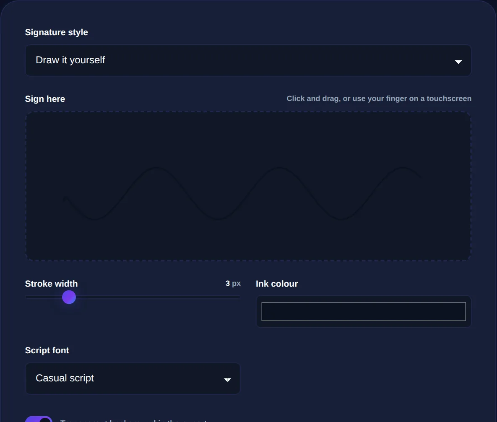

How to Create a Signature for Documents Online
The difference between an electronic signature and a cryptographic one, when a drawn signature is enough, and how to make one privately.
By Mubasher Hussain · Published 2026-07-26 · Updated 2026-09-01 · 1066 words · about 5 minute read
Signing a document no longer means printing it, signing with a pen, and scanning it back. You can create a signature image, typed or drawn, and place it on a document digitally. But "digital signature" means two quite different things, and knowing which you need matters. The Signature Generator lets you create a signature image in your browser, and this article explains the types of signature, when a simple one suffices, and how to make one without uploading anything.
For most everyday agreements, a form, a letter, an internal approval, a drawn or typed signature image is perfectly adequate. For high-stakes legal contracts, a stronger, verifiable kind of signature exists, and it is worth understanding the difference.
Electronic versus cryptographic digital signatures
The term "digital signature" is used loosely, but there are two distinct concepts. An electronic signature is, broadly, any mark you apply to show intent to agree, a drawn squiggle, a typed name, a click of "I accept." A cryptographic digital signature is something more specific and technical: it uses public-key cryptography to mathematically bind a signer's identity to a document and prove it has not been altered since signing. The first is about the appearance and intent of a signature; the second is about cryptographic proof. Both are called "digital signatures" in casual speech, which causes confusion.

When a drawn or typed signature is enough
For the great majority of everyday documents, a simple signature image is entirely sufficient. Many routine agreements, forms, letters and internal approvals are validly completed with an electronic signature that simply shows you intended to sign. A neatly drawn or typed signature placed on the document does exactly that. It is quick, it looks right, and it saves the tedious print-sign-scan cycle. Only when a document specifically requires stronger legal assurance, certain contracts, deeds, or regulated transactions, do you need a formal e-signature service or a cryptographic signature with verified identity.
A drawn signature placed on a document proves intent but does not lock the document, someone could alter the text around it. When you need proof that the whole document is unchanged since signing, that is what a cryptographic digital signature provides.
Creating a signature that looks right
A good signature image has a few practical qualities. Drawn signatures look more personal and are harder to copy convincingly than a typed name in a script font, though a typed one is faster and perfectly acceptable for many uses. Either way, you want the signature on a transparent background so it sits cleanly on the document rather than in a white box, and at a resolution high enough to stay crisp when placed. Once you have the image, you drop it onto the document, a PDF or a printout, wherever the signature line is.
- Drawn signatures feel personal and are common for letters and forms.
- Typed signatures in a handwriting-style font are quick and clear.
- A transparent background lets the signature sit naturally on the page.
- Keep a clean copy you can reuse, so you do not redraw it each time.
The privacy dimension
Your signature is a piece of personal, sensitive data, it identifies you and, in the wrong hands, could be misused. This makes where you create it genuinely important. Many online signature tools upload your drawn signature to their servers, which means a copy of your actual signature now exists on someone else's system. A browser-based generator creates the signature image entirely on your own device, so it is never uploaded. For something as personal as your signature, that local-only approach is not a nicety but a sensible precaution.
Draw or type a signature and export it as a clean image for your documents, entirely in your browser. Your signature is never uploaded.
Signatures in context
A signature is often one part of a larger document workflow. You might place your signature on an invoice or a letter, protect a shared image with a visible mark using an image watermark, or, when genuine confidentiality is required, protect a document's contents with an encryption tool. Matching the tool to the need, a signature image for intent, encryption for secrecy, a cryptographic signature for tamper-proof legal assurance, is what keeps each document handled appropriately.
Placing a signature on a document
Once you have created a signature image, the final step is getting it onto the document cleanly, and a little care here makes the result look professional rather than pasted-on. The ideal is a signature saved with a transparent background, so that when you place it over a PDF or a printed form it shows only the ink strokes, not a white rectangle covering the text beneath. Size it to match the signature line, too large looks clumsy, too small looks tentative, and position it just above the printed name or line where a pen signature would go.
How you apply it depends on the document. Many PDF viewers let you drop an image signature directly onto the page and save the result, which is the quickest route for forms and agreements. For documents you are assembling yourself, you can place the signature image as part of the layout. The reusable nature of a good signature image is a real convenience: create it once, keep the clean transparent version, and reuse it whenever something needs signing, rather than redrawing each time. Throughout, remember the earlier distinction, this places a visible mark showing your intent to sign, which suffices for the great majority of everyday documents, while anything demanding tamper-proof legal assurance calls for a proper cryptographic signature instead. For the common cases, though, a well-made signature image applied neatly to the page is quick, professional, and entirely sufficient.
To recap: signing documents online usually means creating an electronic signature, a drawn or typed image showing your intent to agree, which is sufficient for the vast majority of everyday documents. A cryptographic digital signature is a separate, stronger mechanism for cases needing verifiable proof that a document is unaltered. Make your signature image on a transparent background at good resolution, keep a reusable copy, and generate it locally so your personal signature never leaves your device.